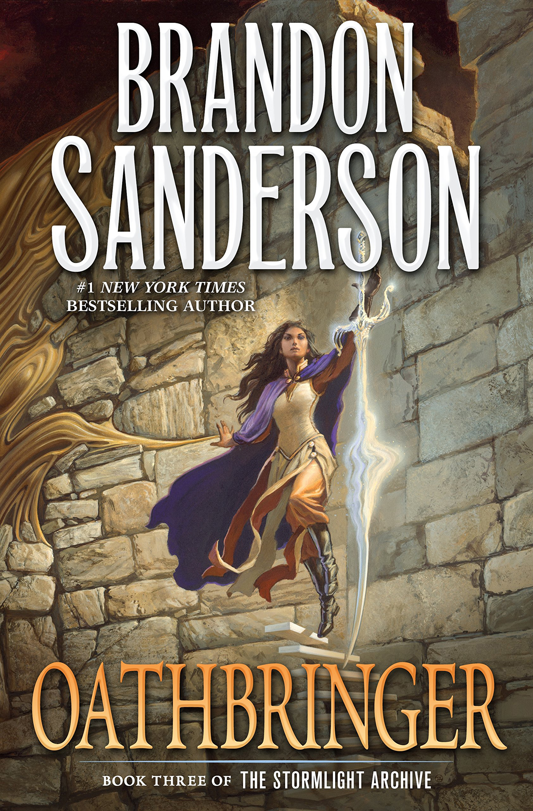

Oathbringer
⭐️⭐️⭐️⭐️
Format: audio (55 hours 5 minutes)
⭐️⭐️⭐️⭐️
Format: audio (55 hours 5 minutes)
Original (12/2017) Review: If you're looking for giant Fantasy novels, this fits right in. It's a looooong book, and unfortunately feels that way for about a fifth of the novel. Additionally, this book in particular suffers from a bit of middle-book syndrome - it needs to fill in some gaps from the past, and lay some new groundwork to keep the series going for another couple books all while introducing some not-completely-earth-shattering elements.
From a stand-alone book perspective, this feels like a 3/5 star book. That said, and despite that somewhat sour intro, for the _series_, this book is a 4/5. It helped answer some questions, kept the overall story moving along, developed characters, introduced new elements, and had several "I did NOT see that coming" moments. In a way, I feel like I need to immediately go back and reread/listen to it, since there was so much to absorb... or go read some internet forums to have others lay it all out... or get super impatient for the 4th book, and devour it once it comes out.
11/2020 Review: This was better my second time through. Even still, the pacing of this book feels off - it drags in various places, and then crams LOTS in the final portion of the book. Despite those criticisms, I continue to enjoy the world (solar system?) that Brandon Sanderson has created. This book progresses a variety of story lines, and easily gets more more sucked in to the series.
- Previously: Warbreaker (Graphic Audio Version)
- Next: Dead or Alive